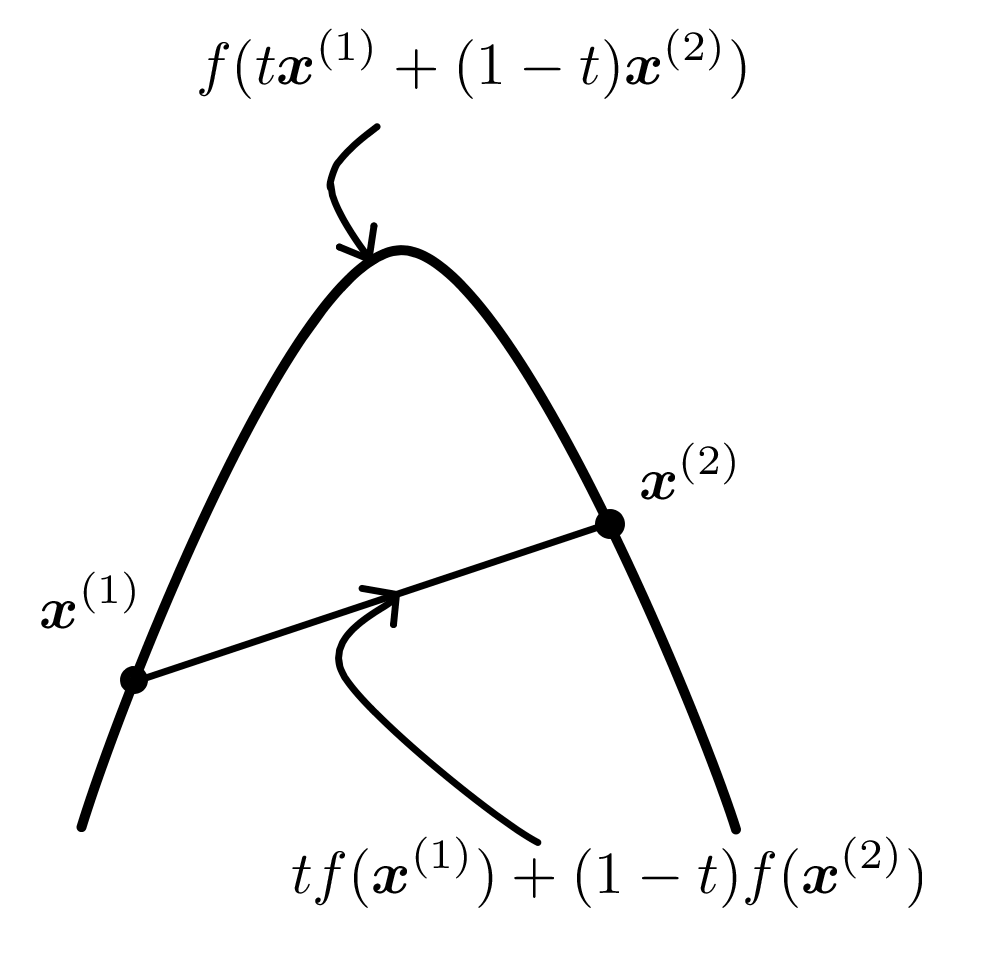
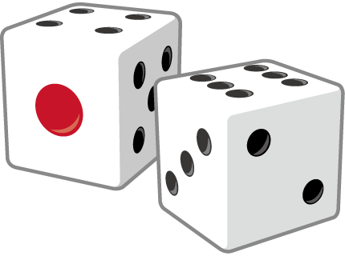

自然言語処理シリーズ 1 言語処理のための機械学習入門 ノート1
電気通信大学大学院 情報理工学研究科 情報学専攻 1年 鈴木一生(2430073)
リンク集
第1章 必要な数学的知識
章末問題(p. 59)
【 1 】
不等式を用いて表されるつぎのような集合
$$A = \{\bm{x} \in \R^d| \bm{v} \cdot \bm{x} \geqq b \} $$
は凸集合であることを示せ。
解答
$\bm{x}^{(1)}, \bm{x}^{(2)} \in A$とする。
このとき，
$$\bm{v} \cdot \bm{x}^{(1)} \geqq b \quad かつ \quad \bm{v} \cdot \bm{x}^{(2)} \geqq b \cdots \cdots ①$$
が成り立つ。
次に，任意の実数$t \in [0, 1]$に対して，
$$\begin{align*}
\bm{v} \{t \bm{x}^{(1)} + (1 - t)\bm{x}^{(2)}\} &= t \bm{v} \cdot \bm{x}^{(1)} + (1 - t) \bm{v} \cdot \bm{x}^{(2)} \\
& \geqq t b + b(1 - t) = b \qquad(\because ①)
\end{align*}$$
となり，$\bm{v} \cdot \{t \bm{x}^{(1)} + (1 - t)\bm{x}^{(2)}\} \geqq b$が成り立つ。
したがって，$\bm{v} \cdot \{t \bm{x}^{(1)} + (1 - t)\bm{x}^{(2)}\} \in A$となるから，
$$A = \{\bm{x} \in \R^d| \bm{v} \cdot \bm{x} \geqq b \} $$
は凸集合である。
【 2 】
二つの凸集合$A$と$B$に対し，$A \cap B$も凸集合になることを示せ。
解答
$\bm{x}^{(1)}, \bm{x}^{(2)} \in A \cap B$とする。
また，$A, B$は凸集合であるから，任意の実数$t \in [0,1]$に対して，
$$t \bm{x}^{(1)} + (1 - t) \bm{x}^{(2)} \in A$$
$$t \bm{x}^{(1)} + (1 - t) \bm{x}^{(2)} \in B$$
が成り立つ。
したがって，$A \cap B \subset A,\; A \cap B \subset B$となるから，
$$t \bm{x}^{(1)} + (1 - t) \bm{x}^{(2)} \in A \cap B$$
が成り立つ。
ゆえに，$A \cap B$も凸集合になる。
【 3 】
二つの凸集合$A$と$B$に対し，$A \cup B$は凸とは限らないことを示せ。
解答
反例を示すことを目標にする。
仮に，【1】に対して具体的な値を定めて，凸集合$A, B$を次のように定義する。
$$A = \{\bm{x} \in \R^2 | (1, 0) \cdot \bm{x} \geqq 1\}$$
$$B = \{\bm{x} \in \R^2 | (-1, 0) \cdot \bm{x} \geqq 1\}$$
このとき，$\bm{x}^{(1)} = (1, 0),\; \bm{x}^{(2)} = (-1, 0)$とすると，
$$\bm{x}^{(1)} = (1, 0) \in A \qquad \therefore \bm{x}^{(1)} = (1, 0) \in A \cup B$$
$$\bm{x}^{(2)} = (-1, 0) \in B \qquad \therefore \bm{x}^{(2)} = (-1, 0) \in A \cup B$$
となる。
ここで，任意の実数$t \in [0, 1]$に対して，
$$t \bm{x}^{(1)} + (1 - t) \bm{x}^{(2)} \in A \cup B$$
が成り立つか検証する。
$t = 0.5$とすると，
$$\begin{align*}
0.5 \bm{x}^{(1)} + (1 - 0.5) \bm{x}^{(2)} &= 0.5 \bm{x}^{(1)} + 0.5 \bm{x}^{(2)} \\
&= 0.5(1,0) + 0.5(-1, 0) \\
&= (0.5, 0) + (-0.5, 0) \\
&= (0,0)
\end{align*}$$
となる。
したがって，$(0,0) \notin A,\; (0,0) \notin B$だから，$(0,0) \notin A \cup B$，すなわち
$$^\exists t \in [0,1] \quad \mathrm{s.t.}\; t \bm{x}^{(1)} + (1 - t) \bm{x}^{(2)} \notin A \cup B$$
となる。
よって，$A\cup B$は凸集合とは限らない。
【 4 】
任意の$x^{(1)}$と$x^{(2)}$について，$f(x^{(2)}) - f(x^{(1)}) \leqq \nabla f(x^{(1)}) (x^{(2)} - x^{(1)})$であるとき，関数$f$が上に凸であることを示せ。
解答
任意の$x^{(1)}$と$x^{(2)}$について，
$$f(x^{(2)}) - f(x^{(1)}) \leqq \nabla f(x^{(1)}) (x^{(2)} - x^{(1)}) \cdots \cdots ①$$
が成り立つ。
任意の$t \in [0,1]$において，$z = t x^{(1)} + (1 - t) x^{(2)}$とする。
このとき，①は任意の$x^{(1)}$と$x^{(2)}$について成り立つものであるから，$x^{(1)}$を$z$で置き換えても成り立つので，
$$\begin{align*}
f(x^{(2)}) - f(z) &\leqq \nabla f(z)(x^{(2)} - z) \\
&= \nabla f(z) [x^{(2)} - \{t x^{(1)} + (1 - t) x^{(2)}\} ] \\
&= t \nabla f(z) (x^{(2)} - x^{(1)}) \cdots \cdots ➁
\end{align*}$$
が成り立つ。
また，①において，$x^{(1)}$と$x^{(2)}$を入れ替えて，さらに入れ替えた後の$x^{(2)}$を$z$で置き換えると，
$$\begin{align*}
f(x^{(1)}) - f(z) &\leqq \nabla f(z) (x^{(1)} - z) \\
&= \nabla f(z) [x^{(1)} - \{t x^{(1)} + (1 - t) x^{(2)}\} ] \\
&= -(1 - t) \nabla f(z) (x^{(2)} - x^{(1)}) \cdots \cdots ③
\end{align*}$$
が成り立つ。
次に，$➁ \times (1 - t)$，$③ \times t$とすることで，次の式が得られる。
$$\left\{
\begin{array}{l}
(1 - t) \{f(x^{(2)}) - f(z)\} \leqq t(1 - t) \nabla f(z) (x^{(2)} - x^{(1)}) \cdots \cdots ➁' \\
t \{f(x^{(1)}) - f(z) \} \leqq -(1 - t) \nabla f(z) (x^{(2)} - x^{(1)}) \cdots \cdots ③'
\end{array}
\right.$$
したがって，$➁' + ③'$とすることで，
$$f(z) \geqq t f(x^{(1)}) + (1 - t) f(x^{(2)})$$
となるから，関数$f$は上に凸である。

上に凸であることを示すには，上図のように，$f(z)$が$\bm{x}^{(1)}, \bm{x}^{(2)}$を結んだ線分より上にあることを示せばよい。
【 5 】
つぎを示せ:
(1) 定数は上にも下にも凸である。
(2) $\log(x)$は$x \in \R^+$において，上に凸である。
(3) $\exp(x)$は下に凸である。
(4) $ax^2$は$a \leqq 0$なら上に，$a \geqq 0$なら下に凸である。
解答
(1) 定数を$c$とすると，$c'' = 0$となるから，$c'' \geqq 0$および$c'' \leqq 0$が成り立つ。
したがって，定数は上にも下にも凸である。
(2) $f(x) = \log (x) \quad (x \in \R^+)$とすると，
$$f'(x) = \frac{1}{x}$$
$$f''(x) = - \frac{1}{x^2} \lt 0$$
となる。
したがって，$\log(x)$は上に凸である。
(3) $f(x) = e^x$とすると，
$$f'(x) = e^x$$
$$f''(x) = e^x \gt 0$$
となるから，$\exp(x)$は下に凸である。
(4) $f(x) = ax^2$とすると，
$$f'(x) = 2ax$$
$$f''(x) = 2a$$
となる。
したがって，
$$\text{(i)}\; a\leqq 0 \Longrightarrow ax^2 \text{は上に凸}$$
$$\text{(ii)}\; a\geqq 0 \Longrightarrow ax^2 \text{は下に凸}$$
となる。
【 6 】
$g(\bm{x}) \geqq 0$なる制約の下で$f(\bm{x})$を最大化する問題を考える。これが凸計画問題であるとき，$(\bm{x}^*, \lambda^*)$が$L(\bm{x}, \lambda) = f(\bm{x}) + \lambda g(\bm{x})$の鞍点ならば，$\bm{x}^*$は最適解であることを証明せよ。
解答
$(\bm{x}^*, \lambda^*)$が$L(\bm{x}, \lambda)$の鞍点であるから，
$$L(\bm{x}, \lambda^*) \leqq L(\bm{x}^*, \lambda^*) \leqq L(\bm{x}^*, \lambda) \cdots \cdots ①$$
が成り立つ。
①より，$L(\bm{x}^*, \lambda^*) \leqq L(\bm{x}^*, \lambda)$が成り立つから，
$$f(\bm{x}^*) + \lambda^* g(\bm{x}^*) \leqq f(\bm{x}^*) + \lambda g(\bm{x}^*)$$
$$\therefore \; \lambda^* g(\bm{x}^*) \leqq \lambda g(\bm{x}^*) \cdots \cdots ➁$$
となる。
さらに，➁より，$\lambda$は任意の値であるから，$\lambda = 0$として，
$$\lambda^* g(\bm{x}^*) \leqq 0 \qquad \qquad \therefore g(\bm{x}^*) \leqq 0$$
$\lambda \gt \lambda^*$として，
$$(\lambda - \lambda^*) g(\bm{x}^*) \geqq 0 \qquad \qquad \therefore g(\bm{x}^*) \geqq 0$$
となる。
したがって，$g(\bm{x}^*) = 0$となるから，$\lambda^* g(\bm{x}^*) = 0$となる。
また，凸計画問題であることから，$f(x)$は上に凸な関数と考えると，すべての接戦は$f(x), g(x)$のグラフの上にきて，かつ$L(\bm{x}, \lambda^*)$も上に凸であるから，
$$L(\bm{x}, \lambda^*) - L(\bm{x}^*, \lambda^*) \leqq \nabla_\bm{x} L(\bm{x}^*, \lambda^*) (\bm{x} - \bm{x}^*)$$
となる。
これを式変形して，
$$\begin{align*}
L(\bm{x}, \lambda^*) &\leqq L(\bm{x}^*, \lambda^*) + \nabla_\bm{x} L(\bm{x}^*, \lambda^*) (\bm{x} - \bm{x}^*) \\
&\leqq L(\bm{x}^*, \lambda^*) + \nabla_\bm{x} L(\bm{x}^*, \lambda) (\bm{x} - \bm{x}^*) \qquad (\because ①) \\
&\leqq f(\bm{x}^*) + \lambda^* g(\bm{x}^*) + \nabla_\bm{x} L(\bm{x}^*, \lambda) (\bm{x} - \bm{x}^*)
\end{align*}$$
となる。
ここで，$\lambda^* g(\bm{x}^*) = 0$となり，さらに，$\nabla_\bm{x} L(\bm{x}^*, \lambda)$において，$L(\bm{x}^*, \lambda)$は$\bm{x}^*$が最大値であり，$\bm{x}$で微分したときに$0$になるから，右辺においては$f(\bm{x}^*)$の項のみが残る。
よって，$L(\bm{x}, \lambda^*) \leqq f(\bm{x}^*)$が成り立つ。
さらに，$L(\bm{x}, \lambda^*) = f(\bm{x}) + \lambda^* g(\bm{x})$において，$\lambda^* \geqq 0$より，制約$g(\bm{x}) \geqq 0$を満たす$\bm{x}$について$f(\bm{x}) \leqq L(\bm{x}, \lambda^*)$となる。
したがって，$f(\bm{x}) \leqq f(\bm{x}^*)$となるから，$\bm{x}^*$が$f(\bm{x})$の最適解である。
【 7 】
$a_i \gt 0$と$b_i$は定数とする。つぎの最大化問題を解け:
$$\max. \quad - \sum_i a_i x_i^2$$
$$\mathrm{s. t. } \sum_i b_i x_i - 1 \geqq 0$$
解答
この最大化問題を解くにあたり，まずこの問題が凸計画問題に該当するか議論する。
凸計画問題である条件として，(i)目的関数が上に凸，(ii)制約を満たす$\bm{x}$の集合が凸集合であることが条件となる。
(i)について，$- a_i x_i^2$は$(-a_i x_i^2)' = -2a_i x_i, \; (- a_i x_i^2)'' = -2a_i \lt 0$より，上に凸であるから，この和である目的関数は上に凸となる。
(ii)について，まず制約を満たす$\bm{x}$の集合を$A = \{\bm{x} | \bm{b}^T \bm{x} - 1 \geqq 0\}$とする。
$\bm{x}^{(1)}, \bm{x}^{(2)} \in A$とすると，$\bm{b}^T \bm{x}^{(1)} \geqq 1,\; \bm{b}^T \bm{x}^{(2)} \geqq 1$となる。
任意の実数$t \in [0, 1]$に対して，
$$\begin{align*}
\bm{b}^T \{t\bm{x}^{(1)} + (1 - t)\bm{x}^{(2)}\} - 1 &= t \bm{b}^T \bm{x}^{(1)} + (1 - t)\bm{b}^T \bm{x}^{(2)} - 1 \\
&\geqq t + (1 - t) - 1 = 0
\end{align*}$$
となる。
したがって，$t \bm{x}^{(1)} + (1 - t)\bm{x}^{(2)} \in A$となるから，制約を満たす$\bm{x}$の集合は凸集合である。
以上より，(i)，(ii)の条件を満たすことから，この問題は凸計画問題として扱うことができる。
ラグランジュ関数を定義し，偏微分すると，
$$L(\bm{x}, \lambda) = - \sum_{i} a_i x_i^2 + \lambda \left(\sum_i b_i x_i - 1 \right)$$
$$\pdv{L(\bm{x}, \lambda)}{x_i} = -2a_i x_i + \lambda b_i $$
となる。
したがって，$(\text{偏微分した式}) = 0$とすることで，$x_i^* = \cfrac{b_i}{2a_i}\lambda$が求まるから，これをラグランジュ関数に代入して，
$$\begin{align*}
L(\bm{x}^*, \lambda) &= - \sum_{i} a_i \left(\frac{b_i}{2a_i}\lambda \right)^2 + \lambda \left(\sum_i b_i \frac{b_i}{2a_i}\lambda - 1 \right) \\
&= \left(\sum_i \frac{b_i^2}{4a_i} \right) \lambda^2 - \lambda
\end{align*}$$
となる。
よって，これを平方完成して，$\lambda$の最小値を求める。
平方完成すると，
$$\begin{align*}
\left(\sum_i \frac{b_i^2}{4a_i} \right) \lambda^2 - \lambda &= \sum_i \frac{b_i^2}{4a_i} \left(\lambda - \cfrac{1}{2\dis{\sum_i} \cfrac{b_i^2}{4a_i} } \right)^2 - \frac{1}{4\dis{\sum_i} \cfrac{b_i^2}{4a_i}}
\end{align*}$$
となるから，最小値$\lambda^*$は，
$$\lambda^* = \cfrac{2}{\dis{\sum_i} \cfrac{b_i^2}{a_i}}$$
となる。
したがって，これを$x_i^*$に代入して，最適解は，
$$x_i^* = \frac{b_i}{2a_i} \lambda = \cfrac{b_i}{a_i \dis{\sum_i}\cfrac{b_i^2}{a_i}}$$
と求まる。
【 8 】
サイコロの例を考えよう。各数字が出る確率はすべて等しく，$1/6$であるとしよう。このサイコロを1回投げたときに出る値の期待値を計算せよ。

解答
サイコロの目を$X$とすると，表のように表すことができる。
| $X$ |
$1$ |
$2$ |
$3$ |
$4$ |
$5$ |
$6$ |
| $P(X)$ |
$\cfrac{1}{6}$ |
$\cfrac{1}{6}$ |
$\cfrac{1}{6}$ |
$\cfrac{1}{6}$ |
$\cfrac{1}{6}$ |
$\cfrac{1}{6}$ |
$\require{cancel}$ したがって，期待値$m_X$は，$$\begin{align*} m_X &= \dis{\sum_x} xP(X = x) \\ &= 1 \times \cfrac{1}{6} + 2 \times \cfrac{1}{6} + \cdots + 6 \times \cfrac{1}{6} \\ &= \cfrac{1}{6} \cdot \dis{\sum_{k = 1}^6} k \\ &= \cfrac{1}{\cancel{6}} \cdot \cfrac{1}{2} \cdot \cancel{6} \cdot 7 = \cfrac{7}{2} \end{align*}$$ $\therefore m_X = \cfrac{7}{2}$
【 9 】
確率変数$X_1, X_2, X_3, X_4$の任意の値$x_1, x_2, x_3, x_4$に対し，つぎの等式が成り立つことを示せ(ただし，$P(x_2|x_3, x_4) \neq 0, P(x_3, x_4) \neq 0$とする):
$$P(x_1| x_2, x_3, x_4) = \frac{P(x_1, x_2| x_3, x_4)}{P(x_2|x_3, x_4)} \qquad \cdots \cdots ①$$
方針
教科書p.27にあるように，$$P(x,y) = P(x|y)P(y) \tag{1.23}\quad $$を順次適用していけばよい。
解答
①の左辺より，$$P(x_1| x_2, x_3, x_4) = \cfrac{P(x_1, x_2, x_3, x_4)}{P(x_2, x_3, x_4)}$$
①の右辺より，
$$P(x_1, x_2| x_3, x_4) = \cfrac{P(x_1, x_2, x_3, x_4)}{P(x_3, x_4)}$$
$$P(x_2| x_3, x_4) = \cfrac{P(x_2, x_3, x_4)}{P(x_3, x_4)}$$
となるから，
$$\cfrac{P(x_1, x_2| x_3, x_4)}{P(x_2| x_3, x_4)} = \cfrac{\cfrac{P(x_1, x_2, x_3, x_4)}{\cancel{P(x_3, x_4)}}}{\cfrac{P(x_2, x_3, x_4)}{\cancel{P(x_3, x_4)}}} = \cfrac{P(x_1, x_2, x_3, x_4)}{P(x_2, x_3, x_4)}$$
したがって，①の左辺と右辺が一致するから，①は成り立つ。
【 10 】
例題1.17と同じ確率分布を考える。すなわち，"Yes"と発せられる確率$p$が0.8であり，5つの発言があったとする。"Yes"が発せされる回数は二項分布に従うとする。このとき，"Yes"の回数が"No"の回数より多い確率を求めよ。
解答
"Yes"の発言回数を$X$とすると，$X$は二項分布$B(5, 0.8)$に従う。
したがって，各$X$における確率を表にすると，
| $X$ | $P(X)$ |
| $0$ | ${}_5 \mathrm{C}_0 \;(0.8)^0 \; (1-0.8)^5$ |
| $1$ | ${}_5 \mathrm{C}_1 \;(0.8)^1 \; (1-0.8)^4$ |
| $2$ | ${}_5 \mathrm{C}_2 \;(0.8)^2 \; (1-0.8)^3$ |
| $3$ | ${}_5 \mathrm{C}_3 \;(0.8)^3 \; (1-0.8)^2$ |
| $4$ | ${}_5 \mathrm{C}_4 \;(0.8)^4 \; (1-0.8)^1$ |
| $5$ | ${}_5 \mathrm{C}_5 \;(0.8)^5 \; (1-0.8)^0$ |
したがって，このうち"Yes"の回数が"No"の回数より多い$P(X = 3), P(X = 4), P(X = 5)$の確率の総和が求める確率となるから，
$$P(X = 3) = {}_5 \mathrm{C}_3 \;(0.8)^3 \; (1-0.8)^2 = 0.2048$$
$$P(X = 4) = {}_5 \mathrm{C}_4 \;(0.8)^4 \; (1-0.8)^1 = 0.4096$$
$$P(X = 5) = {}_5 \mathrm{C}_5 \;(0.8)^5 \; (1-0.8)^0 = 0.32768$$
$$\therefore \dis{\sum_{x = 3}^5} P(X = x) = 0.2048 + 0.4096 + 0.32768 = 0.94208$$
【 11 】
ポアソン分布からのサンプルデータの対数尤度
$$\log P(D) = \sum_{x^(i) \in D} \log \left(\frac{\mu^{x^{(i)}}}{x^{(i)}!} e^{-\mu} \right)$$
は$\mu$に関して上に凸であることを示せ。
解答
$\log P(D)$は$D$の要素である$x^{(i)}$に関する1変数関数$\; \displaystyle \log \left(\frac{\mu^{x^{(i)}}}{x^{(i)}!} e^{-\mu}\right)\;$の総和であることから，各$\; \displaystyle \log \left(\frac{\mu^{x^{(i)}}}{x^{(i)}!} e^{-\mu}\right)\;$が上に凸であれば，対数尤度$\log P(D)$は上に凸である。
したがって，$\; \displaystyle \log \left(\frac{\mu^{x^{(i)}}}{x^{(i)}!} e^{-\mu}\right)\;$が上に凸であるかを考える。
$\log$の性質より， $$\log \left(\frac{\mu^{x^{(i)}}}{x^{(i)}!} e^{-\mu}\right) = x^{(i)} \log \mu - \log x^{(i)} ! - \mu$$となる。
ここで，$x^{(i)}\geqq 0$が成り立つことを利用して，各項が上に凸であるか考える。
$f(\mu) = x^{(i)}\log \mu$は，$f''(\mu) = - \cfrac{x^{(i)}}{\mu^2} \leqq 0$より上に凸，$-\log x^{(i)}!$は定数であるから上に凸，$-\mu$は$(-\mu)'' = 0$より上に凸である。
したがって，対数尤度
$$\log P(D) = \sum_{x^(i) \in D} \log \left(\frac{\mu^{x^{(i)}}}{x^{(i)}!} e^{-\mu} \right)$$
は$\mu$に関して上に凸である。
【 12 】
$\log \dis{\prod_w} p_w + \dis{\sum_{w}} n_w \log p_w$が凸関数であることを示せ。
解答
$$\begin{align*} \log \dis{\prod_w} p_w + \dis{\sum_{w}} n_w \log p_w &= \sum_w \log p_w + \sum_w n_w \log p_w \\ &= \sum_w (1 + n_w) \log p_w\end{align*}$$
したがって，$\dis{\sum_w }(1 + n_w) \log p_w$が上に凸であることを示せばよいから，$p_w$について二階微分して，
$$\frac{\partial}{\partial p_w} \left( \sum_w(1 + n_w) \log p_w\right) = \sum_w \frac{1 + n_w}{p_w} $$
$$\frac{\partial^2}{\partial p_w^2} \left( \sum_w(1 + n_w) \log p_w\right) = \sum_w -\frac{1 + n_w}{{p_w}^2} \leqq 0$$
となるから，$\log \dis{\prod_w} p_w + \dis{\sum_{w}} n_w \log p_w$は凸関数である。
【 13 】
1.5.3項で扱った問題を考える。すなわち，P氏は4単語good, bad, exciting, boringをそれぞれ確率$p_{\mathrm{good}}, p_{\mathrm{bad}}, p_{\mathrm{exciting}}, p_{\mathrm{boring}}$で発するとする。データ$D$中での上記4単語の出現回数は，それぞれ$n_{\mathrm{good}}, n_{\mathrm{bad}}, n_{\mathrm{exciting}}, n_{\mathrm{boring}}$である。このとき，MAP推定を用いてパラメータ$p_{\mathrm{good}}, p_{\mathrm{bad}}, p_{\mathrm{exciting}}, p_{\mathrm{boring}}$を求めよ。ただし，事前確率は一般のディリクレ分布で与えられているとする:
$$P(\theta) \propto (p_{\mathrm{good}})^{\alpha - 1} \times (p_{\mathrm{bad}})^{\alpha - 1} \times (p_{\mathrm{exciting}})^{\alpha - 1} \times (p_{\mathrm{boring}}) ^{\alpha - 1}$$
方針
この問題では最大事後確率推定(MAP推定)を行う。
この事後確率の最大化は次のようにして示すことができる。
$$\begin{align*} \mathrm{arg}\; \underset{\theta}{\max} P(\theta|D) &= \mathrm{arg}\; \underset{\theta}{\max} \frac{P(\theta) \cdot P(D|\theta)}{P(D)} \\ &= \mathrm{arg}\; \underset{\theta}{\max} P(\theta) \cdot P(D|\theta) \end{align*}$$
この式は事後確率の最大値は事前確率と尤度の積を最大化したものと等しいことを示していて，最大化する式$P(\theta)\cdot P(D|\theta)$の対数を取った式$\log P(\theta) \cdot P(D|\theta)$を最大化することを考える。
すなわち，問題文より，
$$\log P(\boldsymbol{p}) \cdot P(D|\boldsymbol{p}) = \log P(\boldsymbol{p}) + \sum_w n_w \log p_w$$
を最大化することで，MAP推定できる。
この関数が凸関数であることは【12】のように明らかであるから，ラグランジュの未定乗数法を用いて最大化を図る。
すなわち，
$$\begin{cases} \max \;\log P(\boldsymbol{p}) + \dis{\sum_w} n_w \log p_w \\ \mathrm{s.t.} \;\dis{\sum_w} p_w - 1 = 0\end{cases}$$
の凸計画問題を解けばよい。
解答
$\boldsymbol{p} = (p_{\mathrm{good}}, p_{\mathrm{bad}}, p_{\mathrm{exciting}}, p_{\mathrm{boring}}), w \in \{\mathrm{good}, \mathrm{bad}, \mathrm{exciting}, \mathrm{boring}\}$とする。
問題文より，
$$\log P(\boldsymbol{p}) \cdot P(D|\boldsymbol{p}) = \log P(\boldsymbol{p}) + \sum_w n_w \log p_w $$
を最大化することで，MAP推定を行う。
この関数は凸関数であることが，【12】のように明らかであることから，ラグランジュの未定乗数法を用いて最大化する。
ここで，ラグランジュ関数$L(\boldsymbol{p}, \lambda)$は，
$$\begin{align*}
L(\boldsymbol{p}, \lambda) &= \log P(\boldsymbol{p}) + \sum_w n_w \log p_w + \lambda \left(\sum_w p_w - 1 \right) \\
&= (\alpha - 1) \sum_{w} \log p_w + \sum_w n_w \log p_w + \lambda \left(\sum_w p_w - 1 \right) \\
\end{align*} $$
したがって，このラグランジュ関数を$p_w, \lambda$について偏微分すると，
$$\frac{\partial L(\boldsymbol{p}, \lambda)}{\partial\, p_w} = \frac{\alpha - 1}{p_w} + \frac{n_w}{p_w} + \lambda$$
$$\frac{\partial L(\boldsymbol{p}, \lambda)}{\partial\, \lambda} = \sum_w p_w - 1$$
となる。
この偏微分した式，それぞれが0になるとき，最適化されるから，それぞれ式変形して，
$$
\left\{ \,
\begin{aligned}
& \frac{n_w + (\alpha - 1)}{p_w} + \lambda = 0 \cdots \cdots ①\\
& \sum_w p_w - 1 = 0 \cdots \cdots ➁
\end{aligned}
\right.
$$
となる。
①より，
$$p_w = \frac{1 - \alpha - n_w}{\lambda}$$
となるからこれを➁に代入して，
$$\lambda = 4(1 - \alpha) - N$$
よって，これを①に代入して，
$$p_w = \frac{n_w + \alpha - 1}{N + 4(\alpha - 1)} \qquad (N = n_{\mathrm{good}} + n_{\mathrm{bad}} + n_{\mathrm{exciting}} + n_{\mathrm{boring}} )$$
【 14 】
例題1.20と同じデータが与えられたとする。すなわち，$n_{\mathrm{good}} = 5, n_{\mathrm{bad}} = 1, n_{\mathrm{exciting}} = 4, n_{\mathrm{boring}} = 0$であるとする。このとき，$p_{\mathrm{good}}, p_{\mathrm{bad}}, p_{\mathrm{exciting}}, p_{\mathrm{boring}}$を求めよ。ただし，事前分布がつぎのように与えられているとして，最大事後確率推定を用いよ:
$$P(p_{\mathrm{good}} = 0.50, p_{\mathrm{bad}} = 0.10, p_{\mathrm{exciting}} = 0.30, p_{\mathrm{boring}} = 0.10) = 0.01, $$
$$P(p_{\mathrm{good}} = 0.25, p_{\mathrm{bad}} = 0.25, p_{\mathrm{exciting}} = 0.25, p_{\mathrm{boring}} = 0.25) = 0.49, $$
$$P(p_{\mathrm{good}} = 0.20, p_{\mathrm{bad}} = 0.30, p_{\mathrm{exciting}} = 0.10, p_{\mathrm{boring}} = 0.40) = 0.50$$
解答
事前分布が問題文において，3つしか与えられていなく，離散的であることから，各$\boldsymbol{p} = (p_{\mathrm{good}},\; p_{\mathrm{bad}},\; p_{\mathrm{exciting}},\; p_{\mathrm{boring}})$において，どの場合に$\log (\theta) + \log P(D)$が最大になるかを調べて推定を行う。
それぞれの場合において，$\log (\theta) + \log P(D)$を求めると，
$$\log 0.01 + \log (0.50^5 \cdot 0.10^1 \cdot 0.30^4 \cdot 0.10^0) = -15.1893824\cdots $$
$$\log 0.49 + \log (0.25^5 \cdot 0.25^1 \cdot 0.25^4 \cdot 0.25^0) = -14.5762935\cdots $$
$$\log 0.50 + \log (0.20^5 \cdot 0.30^1 \cdot 0.10^4 \cdot 0.40^0) = -19.15464992\cdots $$
となる。
したがって，最大事後確率推定を行った結果は，$(p_{\mathrm{good}},\; p_{\mathrm{bad}},\; p_{\mathrm{exciting}},\; p_{\mathrm{boring}}) = (0.25, 0.25, 0.25, 0.25)$となる。
【 15 】
非負の整数からなるデータ$D = \{x^{(1)}, x^{(2)}, \cdots, x^{(|D|)}\}$が与えられたとする。KLダイバージェンスを速さの指標として用いて，最尤推定で求められる分布に最も近いポアソン分布を求めよ。
方針
KLダイバージェンスの定義は次の通りである。
$$D_\mathrm{KL}(P||Q) = \sum_x P(X = x) \log \cfrac{P(X = x)}{Q(X = x)}$$
KLダイバージェンスを用いることで，2つの確率分布に対して，それらの間の異なり具合を測ることができる。
なお，KLはカルバック・ライブラー(Kullback Leibler)の略。
解答
まずは，最尤推定で求められる確率分布を求める。
対数尤度は，事象$x$となる確率を$p_x$，データ$D$中に含まれる事象$x$の個数を$n_x$として表すと，
$$\log \prod_{x^{(i)} \in D}P(x^{(i)}) = \sum_{x^{(i)} \in D} \log P(x^{(i)}) = \sum_x n_x \log p_x$$
となる。
制約条件は，$\dis{\sum_x} p_x = 1$として，最大化を試みる。
ここで，ラグランジュ関数$L(\boldsymbol{p}, \lambda)$は，
$$L(\boldsymbol{p}, \lambda) = \sum_x n_x \log p_x + \lambda \left(\sum_x p_x - 1 \right)$$
となるから，これを偏微分して，
$$\frac{\partial L(\boldsymbol{p}, \lambda)}{\partial p_x} = \frac{n_x}{p_x} + \lambda $$
$$\frac{\partial L(\boldsymbol{p}, \lambda)}{\partial \lambda} = \sum_x p_x - 1$$
よって，これらの式がそれぞれ0になるとき，最大値を取るから，次の連立方程式が成り立つ。
$$
\left\{ \,
\begin{aligned}
& \frac{n_x}{p_x} + \lambda = 0 \cdots \cdots ①\\
& \sum_x p_x - 1 = 0 \cdots \cdots ➁
\end{aligned}
\right.
$$
①より，$p_w = -\cfrac{n_x}{\lambda}$となるから，これを➁に代入して，
$$\sum_x \left(-\cfrac{n_x}{\lambda} \right)= 1$$
$$\therefore \lambda = - N$$
よって，これを①に代入して，
$$p_x = \frac{n_x}{\dis{\sum_x} n_x}$$
したがって，この分布に近いポアソン分布$Q(x; \mu)= \cfrac{\mu^x}{x!}e^{-\mu}$を求めればよい。
KLダイバージェンスを計算して，
$$\begin{align*}
D_{\mathrm{KL}}(P||Q) &= \sum_x P(x) \log \cfrac{P(x)}{Q(x)} \\
&= \sum_x \frac{n_x}{\dis{\sum_x} n_x} \log \cfrac{\frac{n_x}{\dis{\sum_x} n_x}}{\cfrac{\mu^x}{x!}e^{-\mu}} \\
&= \sum_x \frac{n_x}{\dis{\sum_x} n_x} \log \frac{n_x}{\dis{\sum_x} n_x} - \sum_x \frac{n_x}{\dis{\sum_x} n_x} (x\log\mu -\log x! - \mu )
\end{align*}$$
ここで，KLダイバージェンスを最大化することを考えるが，$\cfrac{\mu^x}{x!}e^{-\mu}$は$\mu$に関して上に凸であることから，KLダイバージェンスの関数は下に凸である。
よって，KLダイバージェンスを$\mu$で偏微分した値が0と等しくなるとき，KLダイバージェンスは最大値となるから，このときの$\mu$を求める。
$$\frac{\partial D_{\mathrm{KL}(P||Q)}}{\partial \mu} = -\sum_x \frac{n_x}{\dis{\sum_x} n_x} x \frac{1}{\mu} + 1 = 0$$
$$\therefore \mu = \cfrac{\dis{\sum_x} n_x x}{\dis{\sum_x} n_x}$$
よって，最も近いポアソン分布は，$$ Q(x) = \cfrac{\left( \cfrac{\dis{\sum_x} n_x x}{\dis{\sum_x} n_x}\right)^x}{x!}\exp\left(- \cfrac{\dis{\sum_x} n_x x}{\dis{\sum_x} n_x}\right)$$
【 16 】
JSダイバージェンスとエントロピーとの関係を表すつぎの等式を証明せよ:
$$D_{JS} (P||Q) = - \frac{H(P) + H(Q)}{2} + H \left(\frac{P + Q}{2} \right)$$
ただし，$H$はエントロピーを与える関数を表し，$\cfrac{P + Q}{2}$は，$R(x) = \cfrac{P(x) + Q(x)}{2}$で定義される確率分布である。
方針
JSダイバージェンスの定義は次の通り。
$$D_{\mathrm{JS}} (P||Q) = \frac{1}{2} (D_{\mathrm{KL}}(P||R) + D_\mathrm{KL}(Q||R) )$$
ただし，$R(x) = \cfrac{P(x) + Q(x)}{2}$である。
JSダイバージェンスは，平均的な確率分布までのKLダイバージェンスの平均を示す。
具体的な数式で示すと，
$$\begin{align*}
D_{\mathrm{JS}} (P||Q) &= \frac{1}{2} \left(\sum_x P(x) \log \cfrac{P(x)}{R(x)} + \sum_x Q(x) \log \cfrac{Q(x)}{R(x)} \right) \\
&= \frac{1}{2} \left(\sum_x P(x) \log \cfrac{P(x)}{\cfrac{P(x) + Q(x)}{2}} + \sum_x Q(x) \log \cfrac{Q(x)}{\cfrac{P(x) + Q(x)}{2}} \right)
\end{align*}$$
なお，JSダイバージェンスのJSはジェンセン・シャノン(Jensen Shannon)の略である。
また，エントロピーの定義は次の通り。
$$H(P) = \sum_x -P(X = x)\log P(X = x)$$
解答
$$\begin{align*}
D_{\mathrm{JS}} (P||Q) &= \frac{1}{2} \left(\sum_x P(x) \log \cfrac{P(x)}{R(x)} + \sum_x Q(x) \log \cfrac{Q(x)}{R(x)} \right) \\
&= \frac{1}{2} \left\{ \sum_x P(x) \left(\log P(x) - \log R(x) \right) + \sum_x Q(x) \left(\log Q(x) - \log R(x) \right) \right\} \\
&= \underbrace{ \sum_x - \underbrace{\frac{P(x) + Q(x)}{2}}_{R(x)} \log R(x)}_{H(R)} - \frac{1}{2} \left\{ \underbrace{\sum_x - P(x)\log P(x)}_{H(P)} + \underbrace{\sum_x - Q(x) \log Q(x)}_{H(Q)} \right\} \\
&= H \left(\frac{P + Q}{2} \right) - \frac{H(P) + H(Q)}{2}
\end{align*}$$
【 17 】
相互情報量とエントロピーとの関係を表すつぎの等式を証明せよ:
$$MI(X, Y) = H(X) - H(X|Y)$$
方針
相互情報量$\mathrm{MI}(X, Y)$の定義は次の通りである。
$$\mathrm{MI}(X, Y) = \sum_{x, y} P(x, y) \log \frac{P(x, y)}{P(x) P(y)}$$
解答
$$\frac{P(x, y)}{P(x) P(y)} = \frac{P(x|y) \cdot \cancel{P(y)}}{P(x) \cdot \cancel{P(y)}} = \frac{P(x|y)}{P(x)}$$となるから，
$$\begin{align*} \mathrm{MI}(X, Y) &= \sum_{x, y} P(x, y) \log \frac{P(x, y)}{P(x) P(y)} \\
&= \sum_{x, y} - P(x, y) \log P(x) - \sum_{x, y} - P(x, y) \log P(x|y) \\
&= \sum_x -P(x) \log P(x) - \sum_{x, y} - P(x, y) \log P(x|y) \\
&= H(X) - H(X|Y)
\end{align*}$$
↑トップに戻る